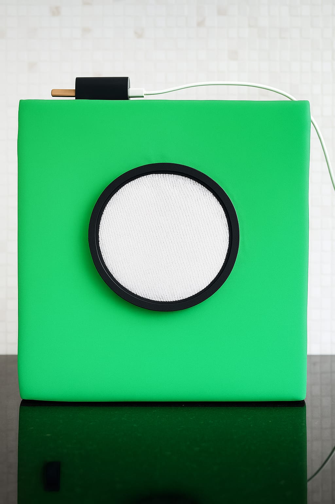
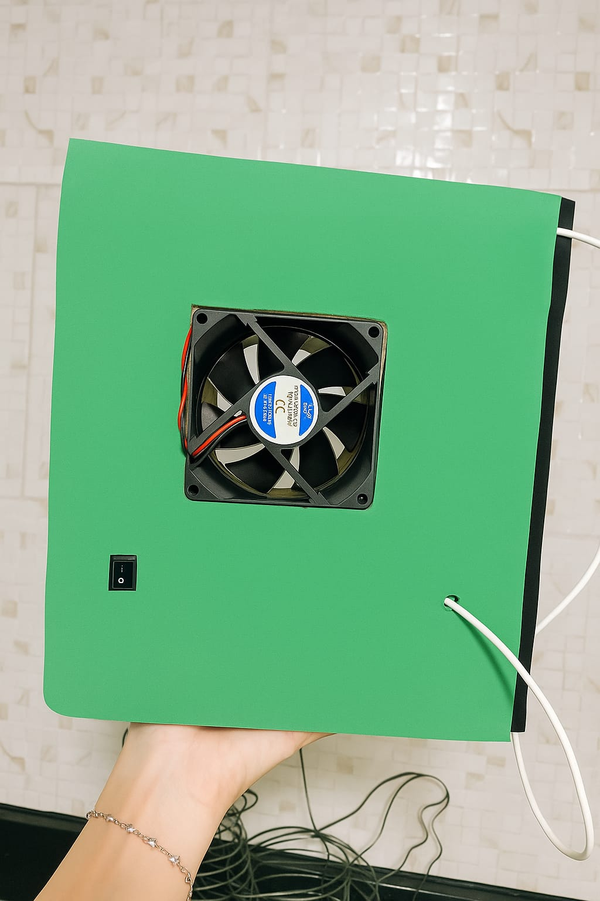
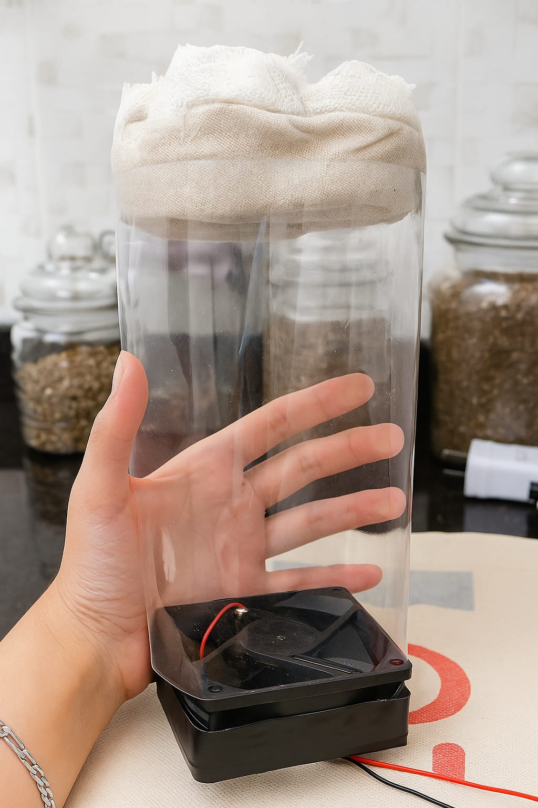
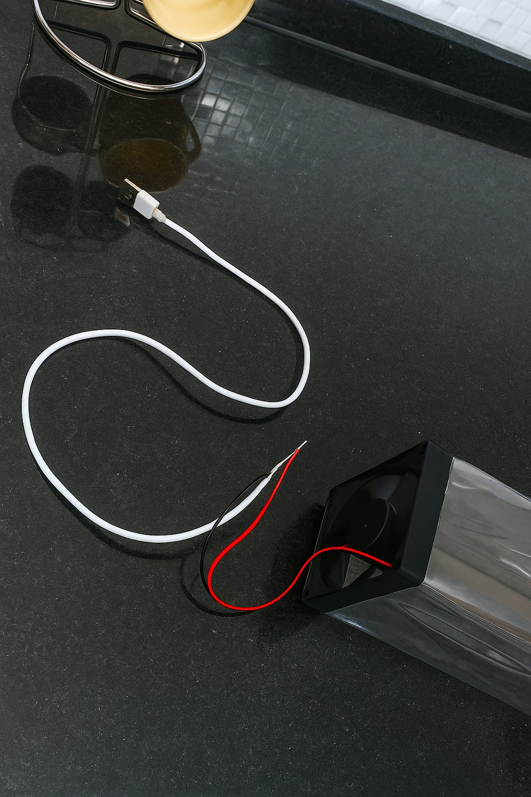
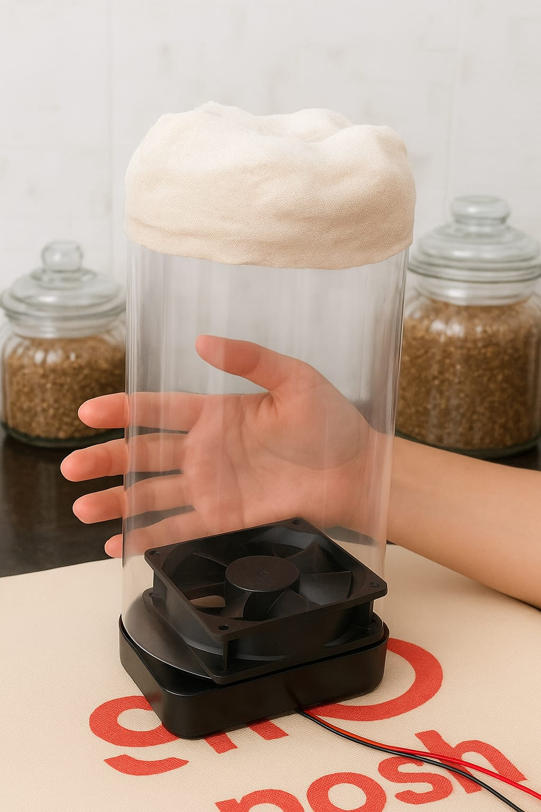

.jpeg)


Purificador casero
Es un purificador artesanal diseñado para limpiar el aire mediante un sistema de filtrado sencillo. Utiliza un ventilador reciclado de computadora que impulsa el aire a través de un filtro ecológico, eliminando polvo, humo y partículas contaminantes.
♻ Sustentabilidad total: fabricado con materiales reciclables y componentes recuperados.
💨 Bajo consumo energético: usa un motor de bajo voltaje (como un cooler de PC).
🔧 Fácil mantenimiento: el filtro se reemplaza fácilmente sin herramientas.
🌍 Impacto ambiental positivo: reduce residuos electrónicos al reutilizar piezas.
🎨 Diseño adaptable: cada unidad puede personalizarse fomentando creatividad y reutilización estética.
Purificá tu entorno, renová tu energía.
ComprarCrea tu purificador
Pasos para realizar tu propio purificador ecológico:
1️⃣ Diseño y armado de la carcasa
Definí la estructura del purificador. Podés usar cartón rígido o plástico con recortes para la entrada y salida de aire.
2️⃣ Instalación del sistema de ventilación
Colocá el ventilador reciclado y conectalo a una pequeña fuente de energía. El aire debe fluir a través del filtro.
3️⃣ Colocación del filtro
Ubicalo en la parte frontal, sostenido por una malla removible para su fácil limpieza o reemplazo.
4️⃣ Conexión eléctrica y prueba
Verificá que el ventilador funcione correctamente y que el flujo de aire atraviese el filtro sin obstrucciones.
Herramientas necesarias
- Tijeras, cúter, regla y silicona caliente
- Destornillador, pinzas y cinta aisladora
- Soldador, estaño y multímetro
- Materiales reciclables (plástico, cartón, telas, cables)


